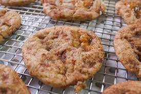

Toffeedoodle Cookie Recipe

Description:
A soft-baked snickerdoodle cookie enhanced with toffee bits.
Ingredients:
- 1 cup unsalted butter, room temperature
- 1 1/2 cups plus 2 tablespoons Imperial Sugar Extra Fine Granulated Sugar
- 1 teaspoon vanilla extract
- 2 eggs
- 2 3/4 cups all-purpose flour*
- 1 teaspoon cream of tartar
- 1/2 teaspoon baking soda
- 1/4 teaspoon salt
- 1 cup toffee bits
- 2 teaspoons cinnamon
Steps:
- Preheat one to 350°F. Line two baking sheets with parchment paper.
Set aside. 1
- Cream butter and 1 1/2 cups sugar in bowl of an electric mixer until
light and fluffy, about 5 minutes. Add vanilla and eggs. Slowly add
flour, cream of tartar, baking soda, and salt. Mix until combined.2
- Reduce speed to low and add toffee bits.3
- In a small bowl combine remaining sugar and cinnamon. Use a
tablespoon scoop to portion cookies and roll into a ball.
Coat dough in cinnamon sugar. Place on prepared sheets, 2-inches apart.
Bake for 10 to 12 minutes. Let cool on pans for 2 minutes, then transfer
to a wire rack to cool completely.